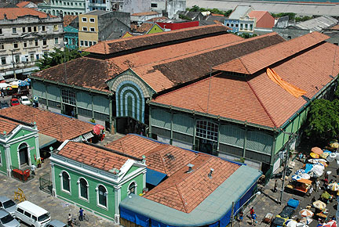
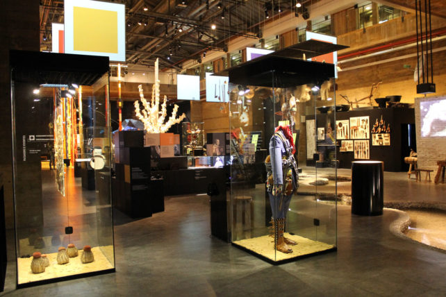
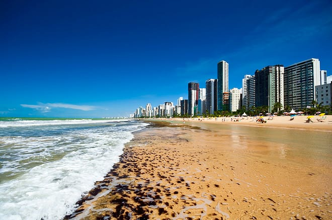

Mercado Sâo José

O Mercado de São José, localizado em Recife, é um marco histórico e cultural. Com mais de um século de história, o mercado oferece uma atmosfera única, onde os visitantes podem explorar bancas de artesanato, produtos locais e experimentar a rica culinária regional. É um ponto de encontro vibrante que reflete a autenticidade e a diversidade da cidade.
Museu Cais do Sertão

O Museu Cais do Sertão, em Recife, é uma imersão fascinante na cultura nordestina. Com exposições interativas e inovadoras, o museu homenageia a rica herança do sertão, destacando a vida, a música e as tradições da região. Desde Luiz Gonzaga até as narrativas do sertão, o Cais do Sertão oferece uma jornada cativante através das histórias profundas e da identidade do Nordeste brasileiro.
Praia da Boa Viagem

A Praia da Boa Viagem, um tesouro natural em Recife, é famosa por suas águas mornas e extensa faixa de areia. Com sua paisagem deslumbrante, é um destino de lazer popular para moradores e turistas. No entanto, é importante estar ciente das recomendações de segurança devido à presença de recifes e tubarões em algumas áreas. Além disso, a orla oferece uma variedade de restaurantes, bares e atividades, tornando-a um ponto de encontro animado para desfrutar do sol, do mar e da cultura local.